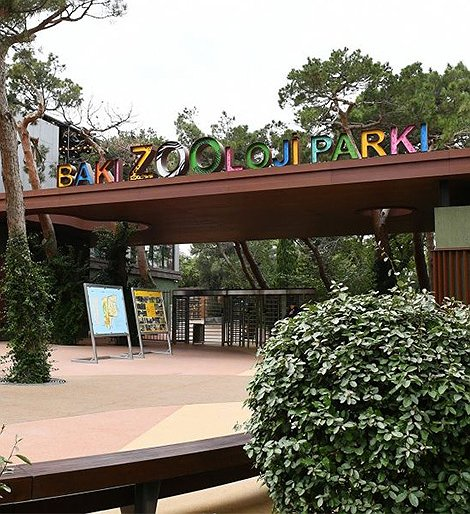

80-ci illərə qədər Zooloji Park Bayıl qəsəbəsində 1 hektarlıq ərazidə fəaliyyət göstərirdi. 1982-ci ildən 2,25 ha ərazi istifadəyə verildi. Zooloji Parkın gələcək inkişafını təmin etmək məqsədilə Bakı şəhər İcra hakimiyyəti tərəfindən 2001-ci ildə ərazisi 2 ha artırılmış, hazırda isə 4,25 ha təşkil edir.
1995-ci ildən etibarən Bakı Zooloji Parkında 60 növ məskunlaşmış və ötən illər ərzində isə bir çox yeniliklər olmuşdur. Bu zaman müddətində Zooloji Parka cırtdan marallar (muntcaq), kenquru, Kuba zebusu, xallı maral, alpak, lama, Amur pələngi, bəbir, yaquar, uzunquyruq meymunlar, flaminqolar,Yapon durnası, taclı durna, sultan toyuqları, qırqovullar, müxtəlif ekzotik quşlar, Nil timsahı, piton, anakonda, iquana gətirilmiş, onların həyat tərzinə uyğun volyerlər, sürünənlər üçün terrarium yaradılmış, 30 iri həcmli akvariumda müxtəlif növ tropik ölkələrdə yaşayan balıqlar qorunmağa başlanılmışdır.
Azərbaycan Respublikasının qanununa əsasən Bakı şəhər Heyvanat Parkı “Xüsusi mühafizə olunan təbiət əraziləri və obyektləri” siyahısına qəbul olunmuşdur.